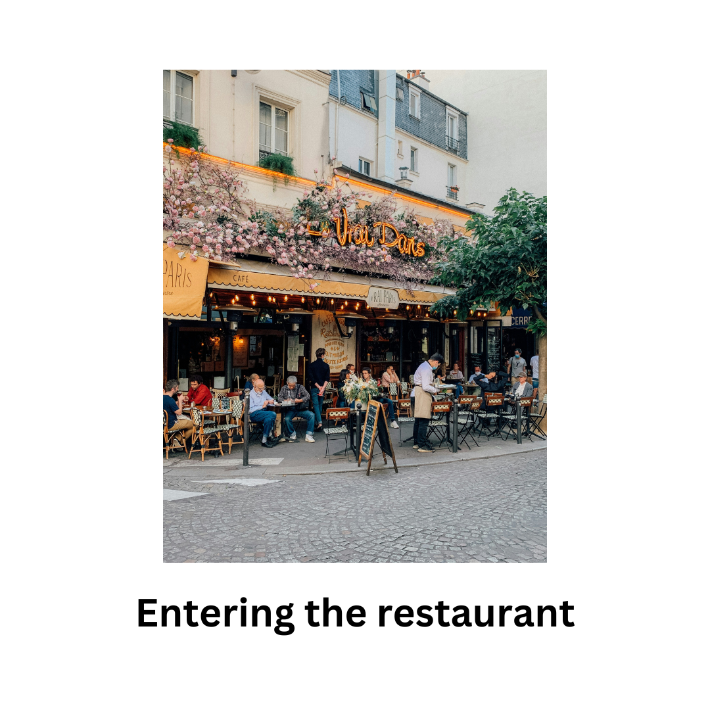
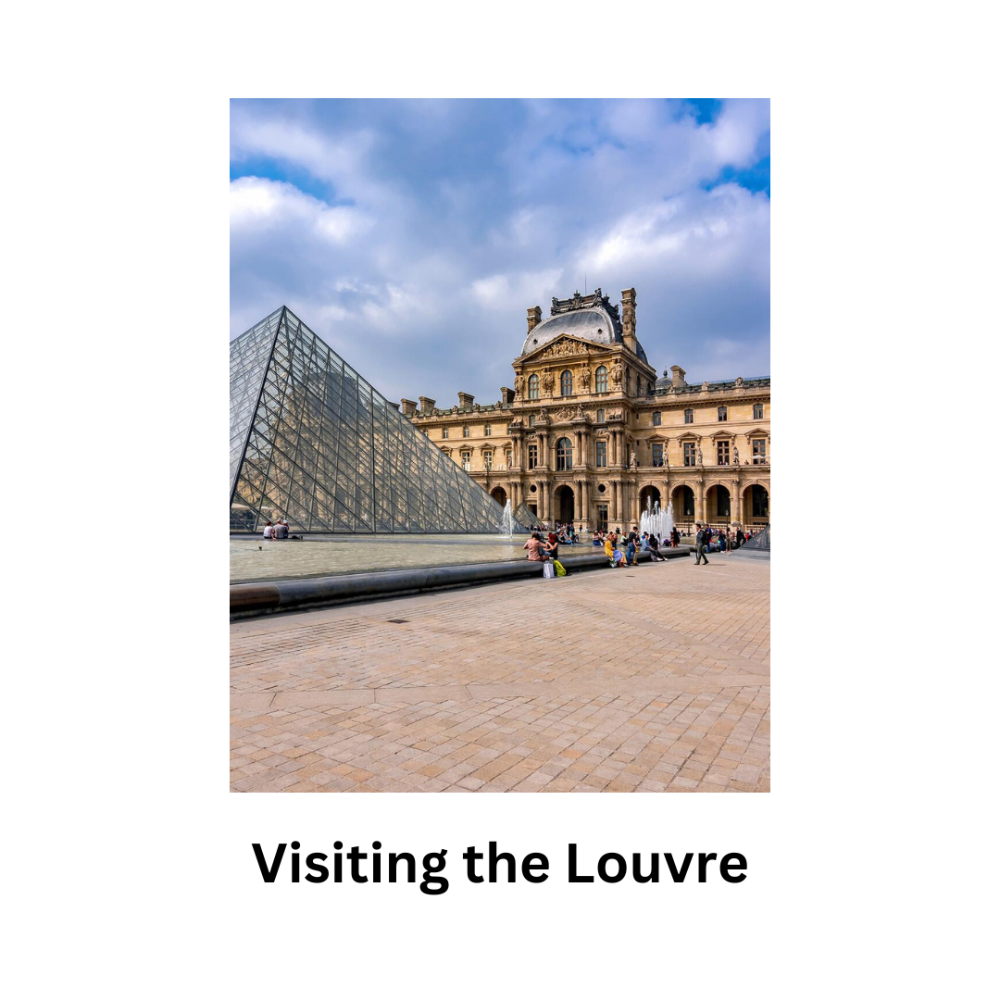
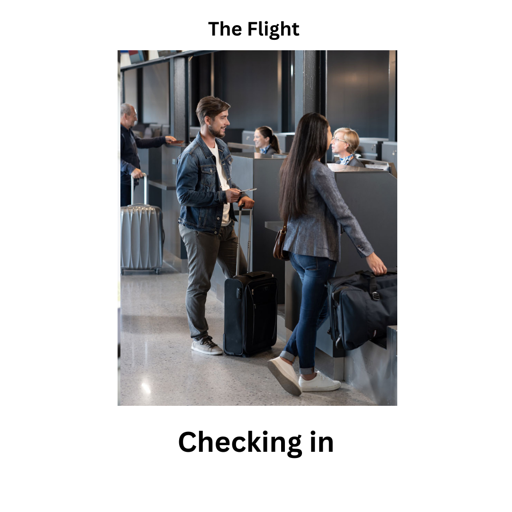
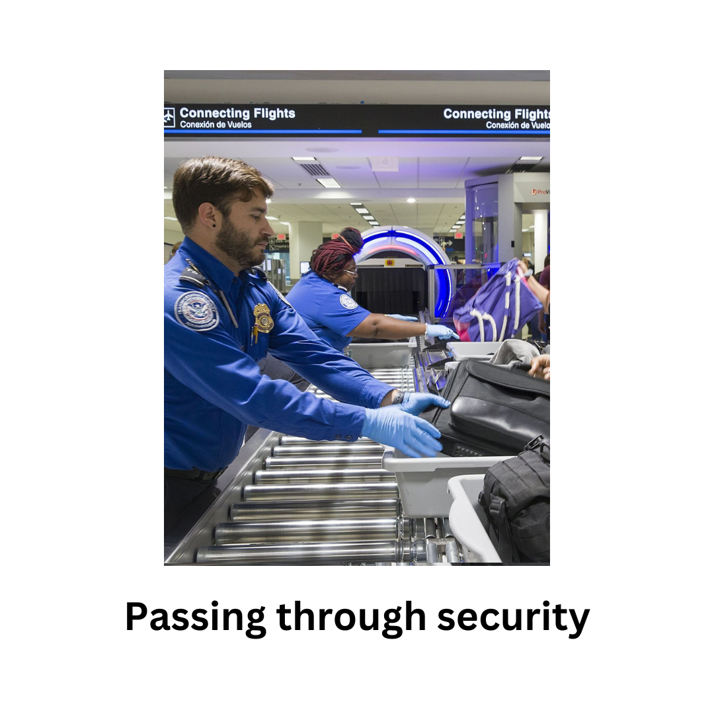

<!DOCTYPE html>
<html>
  <head>

    <style>
        .hide_cursor {
            cursor: none;
        }
        </style>

    <title>My experiment</title>
    <script src="jspsych/plugins/jspsych.js"></script>
    <!--<script src="jspsych/plugins/jspsych-order.js"></script>-->
    <script src="jspsych/plugins/plugin-instructions.js"></script>
    <script src="jspsych/plugins/plugin-survey-text.js"></script>
    <script src="jspsych/plugins/plugin-html-keyboard-response.js"></script>
    <script src="jspsych/plugins/plugin-html-button-response.js"></script>
    <script src="jspsych/plugins/plugin-image-button-response.js"></script>
    <script src="jspsych/plugins/plugin-image-keyboard-response.js"></script>
    <script src="jspsych/plugins/plugin-html-audio-response.js"></script>
    <script src="jspsych/plugins/plugin-initialize-microphone.js"></script>
    <script src="jspsych/plugins/plugin-fullscreen.js"></script>
    <script src="jspsych/plugins/plugin-preload.js"></script>
    <script src="jspsych/plugins/plugin-browser-check.js"></script>

    <script src="Tools/Functions.js"></script>


    <link rel="stylesheet" href="jspsych/css/jspsych.css">
  </head>
  <body></body>
  <script>

//var data_folder             = 'data/Individual_data/'
var data_folder             = 'data/'

var int_data_folder         = 'data/Interactive_data/'
var tools_folder            = 'Tools'

    /* initialize jsPsych */
    var jsPsych = initJsPsych({
      on_finish: function() {
        saveData(data_folder+'All_data/all_data_sub_'+subject_id+".csv", jsPsych.data.get().csv());
        jsPsych.data.get().localSave('csv','mydata.csv');

      }
    });

    /* create timeline */
var timeline = [];

    // generate a random subject ID with 15 characters
var subject_id = jsPsych.randomization.randomID(15);

// pick a random condition for the subject at the start of the experiment
//var condition_assignment = jsPsych.randomization.sampleWithoutReplacement(['conditionA', 'conditionB', 'conditionC'], 1)[0];
// this adds a property called 'subject' and a property called 'condition' to every trial
jsPsych.data.addProperties({
  subject: subject_id,

  //condition: condition_assignment
});


    /* preload images */
    var preload = {
      type: jsPsychPreload,
      images:
['images/instructions/movie_0.png',
 'images/instructions/movie_1.png',
 'images/instructions/movie_2.png',
 'images/instructions/movie_3.png',
 'images/instructions/movie_4.png',
 'images/stories/paris_story/paris_story_0.png',
 'images/stories/paris_story/paris_story_1.png',
 'images/stories/paris_story/paris_story_2.png',
 'images/stories/paris_story/paris_story_3.png',
 'images/stories/paris_story/paris_story_4.png',
 'images/stories/paris_story/paris_story_5.png',
 'images/stories/paris_story/paris_story_6.png',
 'images/stories/paris_story/paris_story_7.png',
 'images/stories/paris_story/paris_story_8.png',
 'images/stories/paris_story/paris_story_9.png',
 'images/stories/paris_story/paris_story_ten.png',
 'images/celebs/timeline_a/0_celebs_a.png',
 'images/celebs/timeline_a/1_Patrick_Stewart.png',
 'images/celebs/timeline_a/2_Stevie_Wonder.png',
 'images/celebs/timeline_a/3_Sean_Penn.png',
 'images/celebs/timeline_a/4__Brooke_Shields.png',
 'images/celebs/timeline_a/5_Tina_Fey.png',
 'images/celebs/timeline_a/6__Pedro_Pascal.png',
 'images/celebs/timeline_a/7_Kristen_Bell.png',
 'images/celebs/timeline_a/8_Jennifer_Lawrence.png',
 'images/celebs/timeline_a/9_Timothee_Chalamet.png',
 'images/celebs/timeline_a/ten_Halle_Bailey.png',
 'images/celebs/timeline_b/0_celebs_b.png',
 'images/celebs/timeline_b/1_Dolly_Parton.png',
 'images/celebs/timeline_b/2_Robin_Williams.png',
 'images/celebs/timeline_b/3_Eddie_Murphy.png',
 'images/celebs/timeline_b/4_Halle_Berry.png',
 'images/celebs/timeline_b/5_Amy_Poehler.png',
 'images/celebs/timeline_b/6_Cillian_Murphy.png',
 'images/celebs/timeline_b/7_Jessica_Alba.png',
 'images/celebs/timeline_b/8_Robert_Pattinson.png',
 'images/celebs/timeline_b/9_Emma_Robert.png',
 'images/celebs/timeline_b/ten_Billie_Eilish.png',
 'images/schemes/restaurant_scheme/restaurant_0.png',
 'images/schemes/restaurant_scheme/restaurant_1.png',
 'images/schemes/restaurant_scheme/restaurant_2.png',
 'images/schemes/restaurant_scheme/restaurant_3.png',
 'images/schemes/restaurant_scheme/restaurant_4.png',
 'images/schemes/restaurant_scheme/restaurant_5.png',
 'images/schemes/restaurant_scheme/restaurant_6.png',
 'images/schemes/restaurant_scheme/restaurant_7.png',
 'images/schemes/restaurant_scheme/restaurant_8.png',
 'images/schemes/restaurant_scheme/restaurant_9.png',
 'images/schemes/restaurant_scheme/restaurant_ten.png',
 'images/schemes/flight_scheme/flight_0.png',
 'images/schemes/flight_scheme/flight_1.png',
 'images/schemes/flight_scheme/flight_2.png',
 'images/schemes/flight_scheme/flight_3.png',
 'images/schemes/flight_scheme/flight_4.png',
 'images/schemes/flight_scheme/flight_5.png',
 'images/schemes/flight_scheme/flight_6.png',
 'images/schemes/flight_scheme/flight_7.png',
 'images/schemes/flight_scheme/flight_8.png',
 'images/schemes/flight_scheme/flight_9.png',
 'images/schemes/flight_scheme/flight_ten.png'
]
};
    timeline.push(preload);

    
    // capture info 
    var subject_id = jsPsych.data.getURLVariable('participantId');
    var study_id = jsPsych.data.getURLVariable('assignmentId');
    var session_id = jsPsych.data.getURLVariable('projectId');
    var urlvar = jsPsych.data.urlVariables();
    const currentUrl = window.location.href;

    jsPsych.data.addProperties({
        subject_id: subject_id,
        study_id: study_id,
        session_id: session_id,
        urlvar: urlvar,
        current_url: currentUrl
    });

    jsPsych.data.addProperties({
        subject: subject_id,
    });

    var trial_0 = {
    type: jsPsychInstructions,
    pages: [
        '<div style="font-family: Arial; background: var(--grey); padding: 100px; padding-top: 5%; text-align: left;">' +
        '<h2>Thank you for participating in this experiment!</h2>' +
        '<p>By clicking the "Begin Study" button, you will be taken to the study, including complete instructions and an informed consent agreement. Before doing so, you must confirm the following:</p>' +
        '<p>I hereby confirm that:<br>' +
        '<input type="checkbox" id="age_checkbox" /> I am over 18 years old.</p>' +
        '<p>Please close all other browser windows and applications, and plug in if you\'re using a laptop computer. Images in this study will not display properly otherwise.<br>' +
        '<input type="checkbox" id="close_windows_checkbox" /> I closed all other windows and tabs.</p>' +
        '<p>Please make sure you are performing this task in a quiet room, without any distractions.<br>' +
        '<input type="checkbox" id="quiet_checkbox" /> I am in a quiet environment.</p>' +
        '<p>The study includes several phases, all of which should be completed without extended breaks.<br>' +
        '<input type="checkbox" id="no_breaks" /> I will perform all phases without extended breaks.</p>' +
        '<br></p>' +
        '</div>'
    ],
    show_clickable_nav: true,
    on_load: function() {
        document.querySelector('button').onclick = function() {
            var age = document.getElementById('age_checkbox').checked;
            var otherWin = document.getElementById('close_windows_checkbox').checked;
            var quiet = document.getElementById('quiet_checkbox').checked;
            var no_breaks = document.getElementById('no_breaks').checked;
            if (age && otherWin && quiet && no_breaks) {
                jsPsych.finishTrial();
            } else {
                alert("You cannot proceed without affirming these statements. If they don't apply to you, you will not be able to participate in this experiment. In that case, please return the HIT to Amazon.");
            }
        }
    }
};
timeline.push(trial_0);


    var trial_consent = {
        type: jsPsychInstructions,
        pages: [
            '<div style="text-align:center; font-family:Arial; font-size: 22px; padding-top:20px; padding-bottom:20px">' +
            '<p>Please carefully read the below consent form before proceeding.</p>' +
            '</img>' +
            '<p>By starting the experiment, you indicate that, having read and understood the information provided, you have decided to participate</p>' +
            '</div>'
        ],
        show_clickable_nav: true
    };
    timeline.push(trial_consent);


    var trial_01 = {
  type: jsPsychFullscreen,
  fullscreen_mode: true
}

  /* create timeline */
timeline.push(trial_01);

// Define trial_2 where the participant makes a choice
var trial_2 = {
  type: jsPsychHtmlButtonResponse,
  stimulus: `
    <div style="display: flex; justify-content: center; align-items: center;">
      
      
    </div>`,
  choices: ['deck 1', 'deck 2'],
  prompt: "",
  on_finish: function(data){
    // Save the participant's choice for use in the next trial
    data.choice = data.response;
  }
};

// Define trial_3 that depends on the choice made in trial_2
// Define trial_3 that depends on the choice made in trial_2
var trial_3 = {
  type: jsPsychHtmlKeyboardResponse,
  stimulus: function(){
    // Get the participant's choice from trial_2
    var choice = jsPsych.data.get().last(1).values()[0].choice;

    // Display images based on the choice
    if(choice === 0){
      return `
        <div style="display: flex; flex-direction: column; justify-content: center; align-items: center;">
          <div style="display: flex; justify-content: center; align-items: center; margin-bottom: 20px;">
            
            
            
            
          </div>
        </div>`;
    } else {
      return `
        <div style="display: flex; flex-direction: column; justify-content: center; align-items: center;">
          <div style="display: flex; justify-content: center; align-items: center; margin-bottom: 20px;">
            
            
            
            
          </div>
        </div>`;
    }
  },
  choices: ['Next','next'],
  trial_duration: 5000,
  on_load: function() {
    // Ensure the "Next" button is displayed correctly
    document.querySelector('.jspsych-btn').style.display = 'inline-block';
  }
};

// Add the trials to the timeline
timeline.push(trial_2, trial_3);


// Define trial_2 where the participant makes a choice
var trial_4 = {
  type: jsPsychHtmlButtonResponse,
  stimulus: `
    <div style="display: flex; justify-content: center; align-items: center;">
      
      
    </div>`,
  choices: ['deck 1', 'deck 2'],
  prompt: "",
  on_finish: function(data){
    // Save the participant's choice for use in the next trial
    data.choice = data.response;
  }
};

// Define trial_3 that depends on the choice made in trial_2
var trial_5 = {
  type: jsPsychHtmlKeyboardResponse,
  stimulus: function(){
    // Get the participant's choice from trial_2
    var choice = jsPsych.data.get().last(1).values()[0].choice;

    // Display images based on the choice
    if(choice === 0){
      return `
        <div style="display: flex; justify-content: center; align-items: center;">
          
          
          
          
        </div>`;
    } else {
      return `
        <div style="display: flex; justify-content: center; align-items: center;">
          
          
          
          
        </div>`;
        
    }
  },
  choices: ['Next','next'],
  prompt: "",
  trial_duration: "5000",

};

// Add the trials to the timeline
timeline.push(trial_4, trial_5);

// Define trial_2 where the participant makes a choice
var trial_6 = {
  type: jsPsychHtmlButtonResponse,
  stimulus: `
    <div style="display: flex; justify-content: center; align-items: center;">
      
      
    </div>`,
  choices: ['deck 1', 'deck 2'],
  prompt: "",
  on_finish: function(data){
    // Save the participant's choice for use in the next trial
    data.choice = data.response;
  }
};

// Define trial_3 that depends on the choice made in trial_2
// Define trial_3 that depends on the choice made in trial_2
var trial_7 = {
  type: jsPsychHtmlKeyboardResponse,
  stimulus: function(){
    // Get the participant's choice from trial_2
    var choice = jsPsych.data.get().last(1).values()[0].choice;

    // Display images based on the choice
    if(choice === 0){
      return `
        <div style="display: flex; flex-direction: column; justify-content: center; align-items: center;">
          <div style="display: flex; justify-content: center; align-items: center; margin-bottom: 20px;">
            
            
            
            
          </div>
        </div>`;
    } else {
      return `
        <div style="display: flex; flex-direction: column; justify-content: center; align-items: center;">
          <div style="display: flex; justify-content: center; align-items: center; margin-bottom: 20px;">
            
            
            
            
          </div>
        </div>`;
    }
  },
  choices: ['Next','next'],
  trial_duration: 5000,
  on_load: function() {
    // Ensure the "Next" button is displayed correctly
    document.querySelector('.jspsych-btn').style.display = 'inline-block';
  }
};

// Add the trials to the timeline
timeline.push(trial_6, trial_7);

var trial_8 = {
  type: jsPsychHtmlButtonResponse,
  stimulus: `
    <div style="display: flex; justify-content: center; align-items: center;">
      
      
    </div>`,
  choices: ['deck 1', 'deck 2'],
  prompt: "",
  on_finish: function(data){
    // Save the participant's choice for use in the next trial
    data.choice = data.response;
  }
};

// Define trial_3 that depends on the choice made in trial_2
// Define trial_3 that depends on the choice made in trial_2
var trial_9 = {
  type: jsPsychHtmlKeyboardResponse,
  stimulus: function(){
    // Get the participant's choice from trial_2
    var choice = jsPsych.data.get().last(1).values()[0].choice;

    // Display images based on the choice
    if(choice === 0){
      return `
        <div style="display: flex; flex-direction: column; justify-content: center; align-items: center;">
          <div style="display: flex; justify-content: center; align-items: center; margin-bottom: 20px;">
            
            
            
            
          </div>
        </div>`;
    } else {
      return `
        <div style="display: flex; flex-direction: column; justify-content: center; align-items: center;">
          <div style="display: flex; justify-content: center; align-items: center; margin-bottom: 20px;">
            
            
            
            
          </div>
        </div>`;
    }
  },
  choices: ['Next','next'],
  trial_duration: 5000,
  on_load: function() {
    // Ensure the "Next" button is displayed correctly
    document.querySelector('.jspsych-btn').style.display = 'inline-block';
  }
};

// Add the trials to the timeline
timeline.push(trial_8, trial_9);


   

var trial_15 = {
  type: jsPsychSurveyText,
  questions: [
    {prompt: 'please insert your gender (MALE/ FEMALE/ OTHER)'},
    {prompt: 'Please insert your age'}
  ]
}
timeline.push(trial_15);


var trial_16 = {
        type: jsPsychInstructions,
        pages: [

        '<span style="color: black; font-size: 24px"> You have completed the experiment.'  +'<br/>'+ 'The completion code is : AJFHBG896' +'<br/>'+  'Thank you for your participation!</span> '

    ],
    show_clickable_nav: true
    };
    timeline.push(trial_16);

    /* start the experiment */
    var trial_17 = {
  type: jsPsychSurveyText,
  questions: [
    {prompt: 'please insert The completion code'},]
}
timeline.push(trial_17);

jsPsych.run(timeline);


  </script>
</html>
